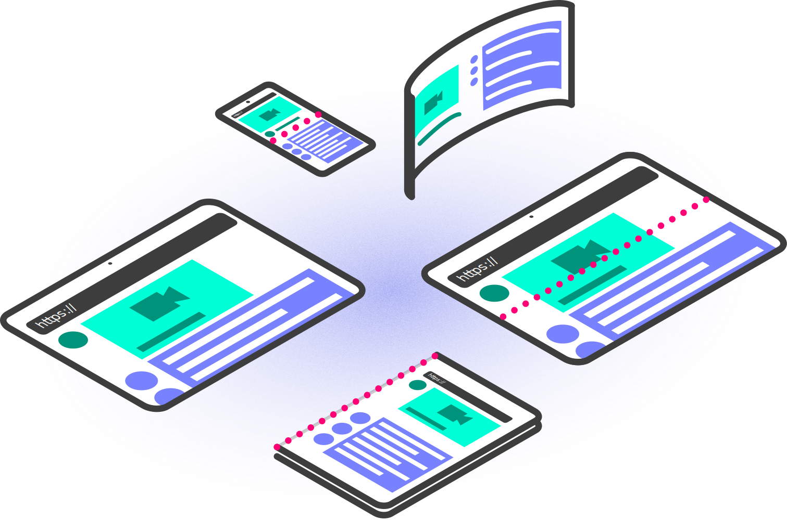
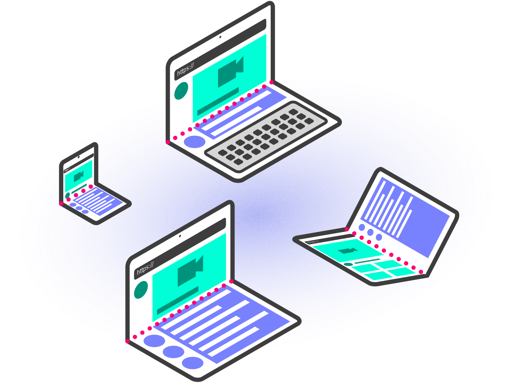

This document specifies an API that allows web applications to request
and be notified of changes of the posture of a device.
Implementors need to be aware that this specification is extremely
unstable. Implementors who are not taking part in the
discussions will find the specification changing out from under them in
incompatible ways. Vendors interested in implementing this
specification before it eventually reaches the Candidate Recommendation
phase should subscribe
to the repository on GitHub and take part in the discussions.
Introduction
The device posture is the physical position in which a device holds
which may be derived from sensors in addition to the angle. New types
of mobile devices are appearing that have some sort of capabilities
that allow them to change their posture. The most common types of
devices are the ones that can fold (their screen or around their
screen), allowing them to physically alter their form factor. The main
interest in knowing the posture of a device is to enable new user
experiences with responsive design.
Among the described "folding" devices, there are mainly two different
physical form factors: devices with a single flexible screen
(seamless), and devices with two screens (with seam). They can both
fold around a hinge, and the current specification applies to both
types. It should be clarified as well that both seamless and (devices)
with seam can be of different dimension ranging from mobile and tablets
to laptop sizes. It should also be noted that different devices will
have different default orientations (portrait or landscape), and that
the fold might happen in a vertical or horizontal way.

From enhancing the usability of a website by avoiding the area of a
fold, to enabling innovative use cases for the web, knowing the posture
of a device can help developers tailor their content to different
devices.
Content can be consumed and browsed even when the device is not flat,
in which case the developer might want to provide a different layout
for it depending on the posture state in which the device is being
used.
Internal slots
The following internal slots are added to the {{Document}} interface.
As it name implies, it will house the value of the current posture the
device is
|
Internal slot
|
Description
|
|
[[\CurrentPosture]]
|
The current posture.
|
Extensions to the `Navigator` interface
The [[HTML]] specification defines the Navigator interface,
which this specification extends:
[SecureContext, Exposed=(Window)]
partial interface Navigator {
[SameObject] readonly attribute DevicePosture devicePosture;
};
The DevicePosture interface
[SecureContext, Exposed=(Window)]
interface DevicePosture : EventTarget {
readonly attribute DevicePostureType type;
attribute EventHandler onchange;
};
enum DevicePostureType {
"continuous",
"folded"
};
The type attribute: Get current device posture
When getting the type attribute, the user agent MUST return the value
of [=this=]'s [=relevant global object=]'s [=associated Document=]'s
internal slot {{Document/[[CurrentPosture]]}}.
Posture types
This specification defines the following posture values:
-

Continuous posture: The continuous posture refers to a
"flat" position. This is the default case for most devices not
allowing different postures.
It includes devices with no folds, hinges or similar capabilities.
Due to the nature of hardware innovation, it also includes devices
with dual, foldable, rollable or curved screens, as long as they
are in a posture where the document is expected to be displayed
with a flat layout.
Examples of these are:
- Foldable device in a flat, fully unfolded posture.
- Foldable device running the browser in a window/section that
does not span across the hinge.
- 2-in-1 device in tablet mode using only 1 screen/side.
- Devices that do not fold.
In some cases, devices can run several apps and be in a physical
posture other than flat, but as long as the browser does not span
through several screens/sections, the corresponding posture is
continuous.
-
 Folded posture: The folded
posture refers to devices that can physically fold. These devices can
have one flexible screen or two adjacent screens. This posture forms
an angle between the displays/sections that does not exceed a 'flat'
position.
Examples of these are:
- Foldable device with a vertical hinge and internal screens
being used in a 'book' posture, where the content spans through
both sections and forms an angle between ~30° and ~170°.
- Foldable device with a horizontal hinge and internal screens
being used in a 'laptop' posture.
In the API, the [=posture=] values are represented by the
{{DevicePostureType}} enum values.
Device Posture Media Queries
The 'device-posture' media feature
The device-posture media feature represents,
via a CSS media query [[MEDIAQ]], the posture of the device.
This media feature applies to the top-level browsing context and any
child browsing contexts. Child browsing contexts reflect the
posture of the top-level browsing context.
-
Value:
-
continuous | folded
-
Applies to:
-
visual media types
-
Accepts min/max prefixes:
-
No
A user agent MUST reflect the applied posture of the web
application via a CSS media query [[MEDIAQ]].
Reading the posture
Every instance of {{Document}} has an internal slot
{{Document/[[CurrentPosture]]}}, which should be initialized when the
document is created, otherwise they MUST be initialized the
first time they are accessed and before their value is read. The
user agent MUST update the device posture information of
the document to initialize it.
For a given document, the current posture is derived from
the current hinge angle and the current screen orientation, and
potentially other implementation-specific signals.
These tables are non-normative.
Posture values table
The values are approximations and might differ per device. For
instance, a device might not yield exactly 180° when laying flat, but
instead values ranging from 175° to 185°. Device makers SHOULD make
sure that the physical device postures map correctly to the postures
defined by this specification.
Some devices might also lack one or more of the postures due to
physical constraints or device design, in which case the device SHOULD
make sure that all combinations of angles and device orientation (which
can be locked by [[SCREEN-ORIENTATION]] and host OS), as well as device
specific signals, maps into one of the defined postures.
Foldables
Posture values for foldable devices
|
Posture
|
Angle value
|
|
continuous
|
< ~180°
|
|
folded
|
~180°
|
Algorithms
Updating the device posture information
The steps to update the device posture information of a
document are as follows:
- Update the document.{{Document/[[CurrentPosture]]}} given
current hinge angle value, current screen orientation, as well
as potential implementation-specific signals, according to posture
values table.
Device Posture change
Whenever the screen(s) fold angle, screen orientation or device
specific signals change, the user agent MUST run the following
steps as part of the next animation frame task:
- Let |browsing contexts| be the list of the descendant browsing
contexts of the top-level browsing context's
document.
- [=list/for each=] |context:browsing context| in |browsing
contexts|, run the following sub-steps:
- Let |document| be the |context|'s [=navigable/active
document=].
- If |document| is not visible per [[PAGE-VISIBILITY]], abort
these steps.
-
Update the device posture information of |document|.
-
Fire an event named `change` at |document|'s
{{Window.navigator.devicePosture}} object.
Whenever a document becomes visible per [[PAGE-VISIBILITY]],
in other words after the now visible algorithm is run, the
user agent MUST run the following substeps as part of the next
animation frame task:
- Let |document| be the document in question.
- Let |posture| be the |document|.{{Document/[[CurrentPosture]]}}.
-
Update the device posture information of the |document|.
- If |posture| is different from the
|document|.{{Document/[[CurrentPosture]]}}, run the following
sub-steps:
-
Fire an event named `change` at the |document|'s
{{Window.navigator.devicePosture}} object.
Developers need to be aware that a
{{Window.navigator.devicePosture}} object from a document
that is not visible, as per [[PAGE-VISIBILITY]], will not receive
an orientation change event. This is to prevent unnecessary changes
to layout, etc. in the non-visible web application.
This section could be improved if the [[PAGE-VISIBILITY]]
specification had a hook for when the document becomes visible and
hidden.
PR
54.
Security and Privacy considerations
The Device Posture API exposes a posture determined from the
hinge angle value and other sensors.
Typical sensor readings are sent at a constant frequency to whomever is
listening to its readings. However the fold angle only communicates its
value when the hinge is manipulated by the user. Variations in the
angle’s readings and posture calculation, as well as event dispatching
frequency offer a possibility of fingerprinting to identify users. User
agents may reduce this risk by limiting or coalescing events when
exposing this information to web developers. Users don’t constantly
adjust the angle, so the fold angle value is changing in bursts: the
events may be dispatched at a very low frequency most of the time and
fire at a high frequency when the device is being opened or closed. In
order for the events to be dispatched, the content must be on the
foreground and visible to the user. Because the API does not directly
expose the raw angle values, but a more abstract posture with fewer
possible states, fingerprinting possibilities are more limited.
If the same code using the API can be used simultaneously in different
window contexts on the same device it may be possible for that code to
correlate the user across those two contexts, creating unanticipated
tracking mechanisms.
Types of security and privacy threats
This section is non-normative.
Mitigation Strategies
This section is non-normative.
This section gives a high-level presentation of some of the
mitigation strategies specified in the normative sections of this
specification.
Secure Context
Posture value readings are explicitly flagged by the Secure
Contexts specification as a high-value target for network
attackers. Thus all interfaces defined by this specification or
extension specifications are only available within a secure
context.
Focused Area
Posture value readings are only available for active documents
whose origin is the same origin-domain with the currently focused
area document.
This is done in order to mitigate the risk of a skimming attack
against the browsing context containing an element which has gained
focus, for example when the user carries out an in-game purchase
using a third party payment service from within an iframe.
Visibility State
Posture value change events are only fired for active documents
whose visibility state is "visible", and polling the value while
that is not the case, will return a stale value as the value is
only updated while the visibility state is "visible" or just
changed to "visible".
Dependencies
The following concepts and interfaces are defined in
[[SCREEN-ORIENTATION]]: current screen orientation as
represented by the {{OrientationType}} enum.
The following is defined in [[MEDIAQ]]: Evaluating Media Features in a Boolean
Context.
The following concepts and interfaces are defined in [[HTML]]:
list of
the descendant browsing contexts.
The following is defined in [[PAGE-VISIBILITY]]: now visible
algorithm.
The following is used but not defined in [[FULLSCREEN]]: animation frame
task.
This should now be updated since the
animation frame task issue
is recently resolved and the timing is now defined.